A Taste of Malaysia
Discover National Flavours
Malaysia is a food paradise filled with delicious flavours, unique recipes and traditional dishes. Influenced by different cultures and generations, Malaysian cuisine offers an amazing variety of food that brings people together. Explore the delicious tastes that make Malaysia special.
Famous Malaysian Main Dishes

Nasi Lemak
Malaysia's beloved national dish, traditionally served with fragrant coconut rice, sambal, anchovies, peanuts, cucumber and boiled egg.
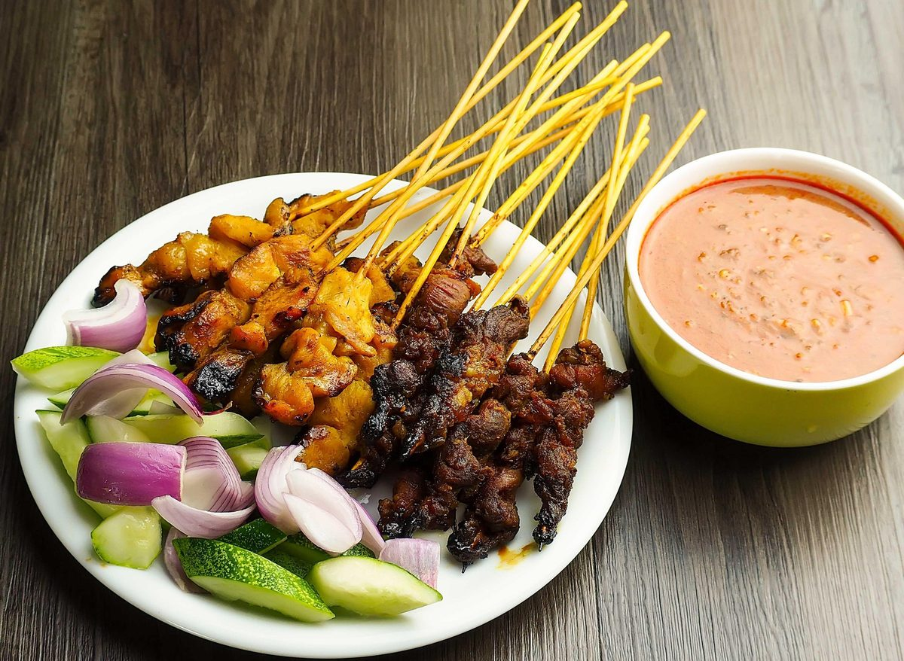
Satay
Grilled meat skewers served with delicious peanut sauce, cucumber and rice cakes.
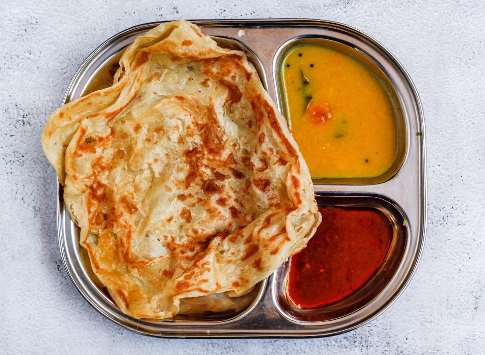
Roti Canai
A crispy and flaky flatbread commonly enjoyed with dhal or curry.
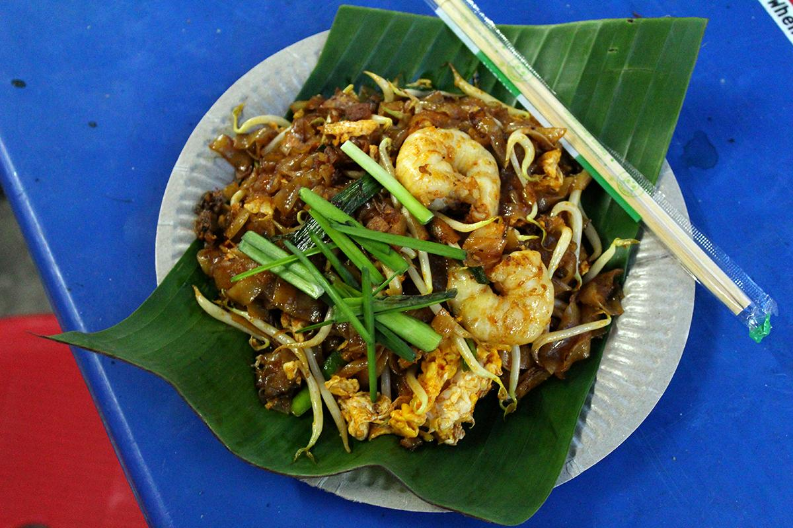
Char Kway Teow
Stir-fried flat rice noodles cooked with ingredients such as prawns, eggs, bean sprouts and soy sauce.
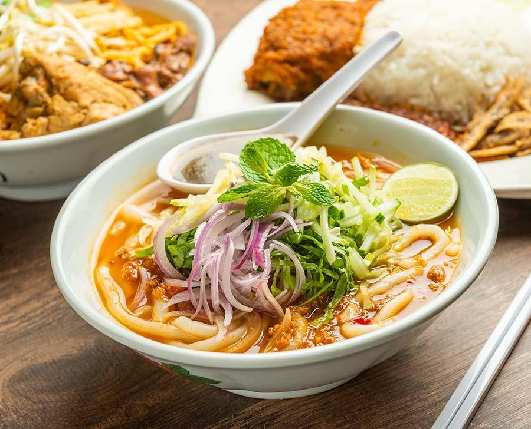
Laksa
A flavourful noodle dish with different regional varieties, including spicy coconut-based and sour fish-based broths.

Rendang
A rich and aromatic meat dish slowly cooked with coconut milk and traditional spices.
Traditional Snacks and Desserts
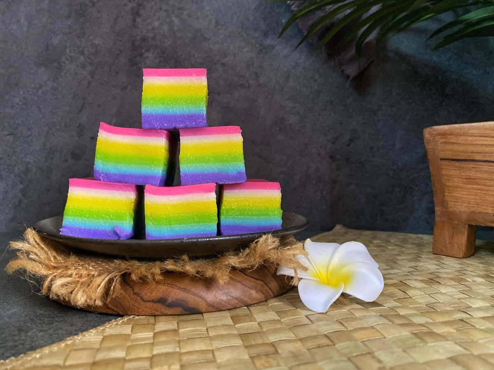
Kuih Lapis
A colourful layered steamed cake.
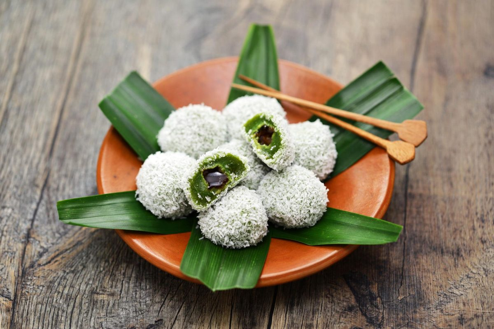
Onde-Onde
Small pandan-flavoured balls filled with palm sugar and coated with grated coconut.
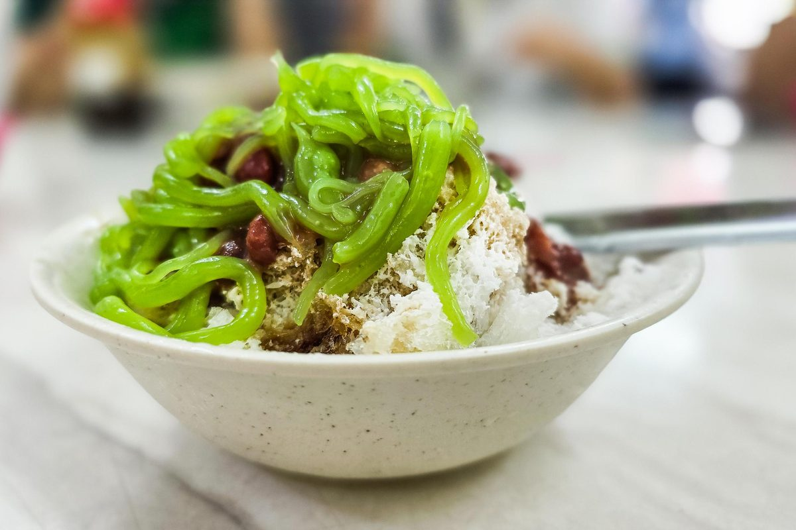
Cendol
A refreshing dessert made with shaved ice, coconut milk, green rice-flour jelly and palm sugar syrup.
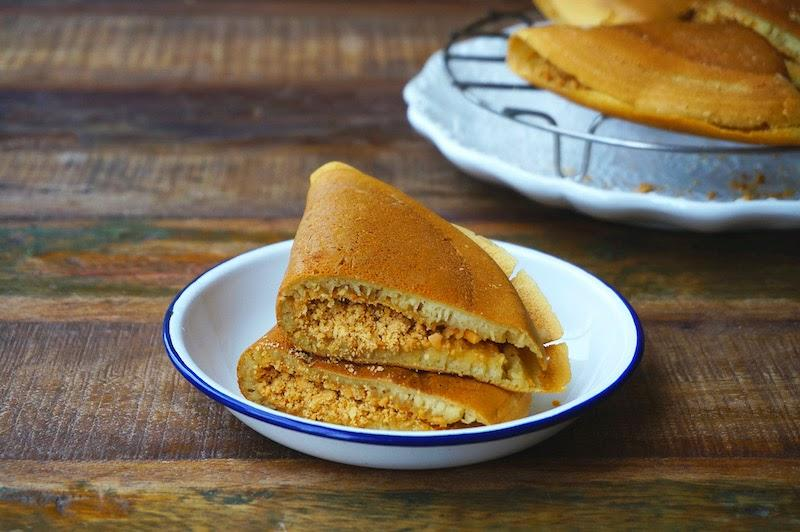
Apam Balik
A folded pancake commonly filled with peanuts, sugar and sweet corn.
Traditional Malaysian Drinks
Malaysians enjoy a variety of traditional drinks, from hot local coffee and pulled tea to refreshing iced beverages. These drinks are commonly enjoyed at restaurants, food stalls and traditional kopitiams.
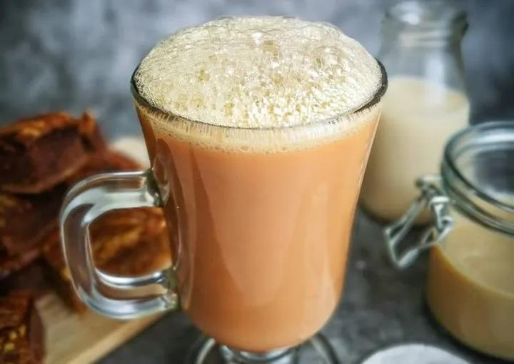
Teh Tarik
Pulled milk tea known for its frothy texture.
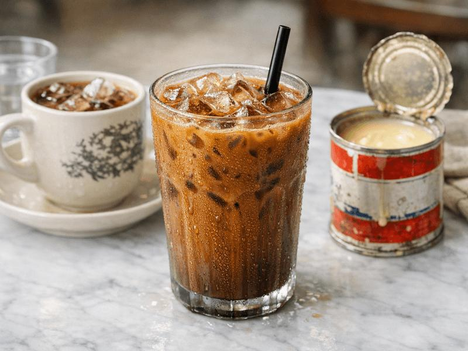
Kopi O
Traditional local black coffee, usually served with sugar.
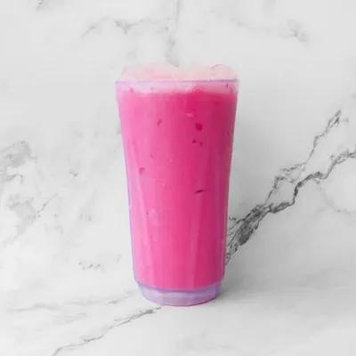
Sirap Bandung
A sweet rose-flavoured milk drink.
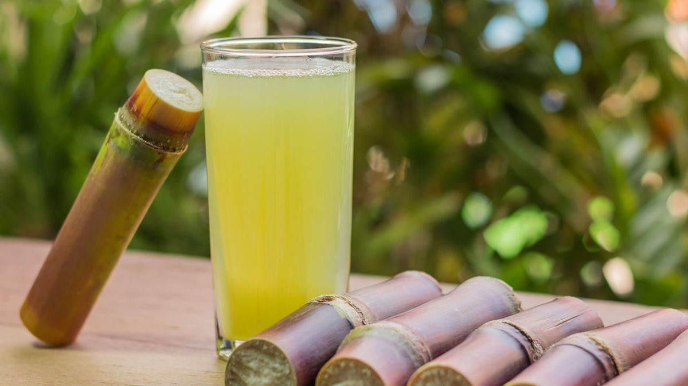
Air Tebu
Fresh sugarcane juice.
Street Food Culture
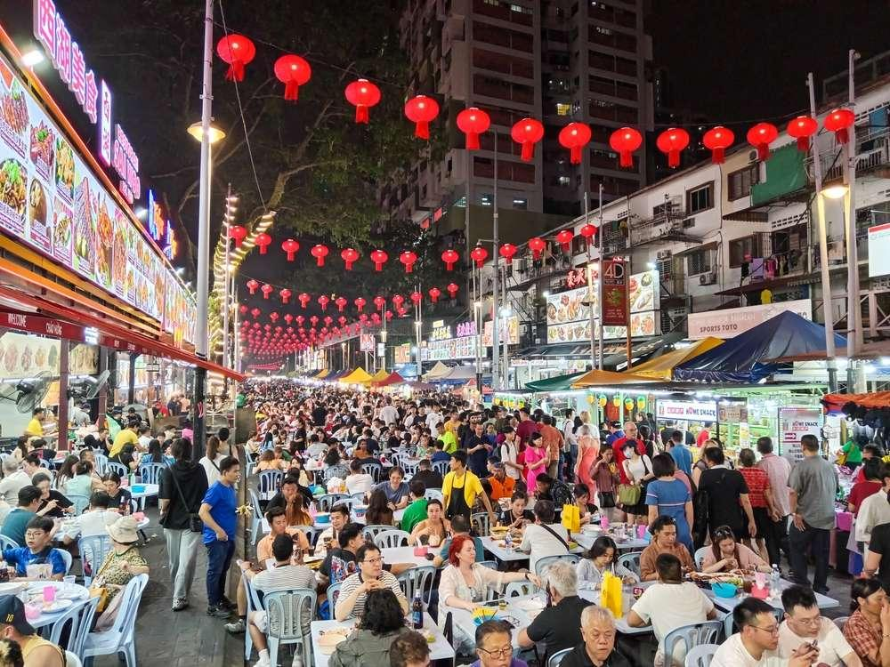
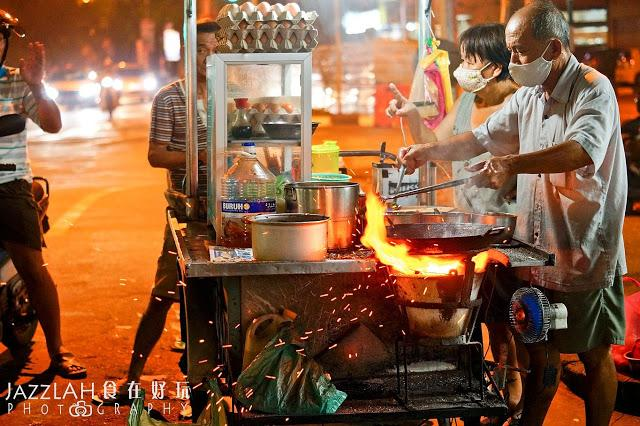
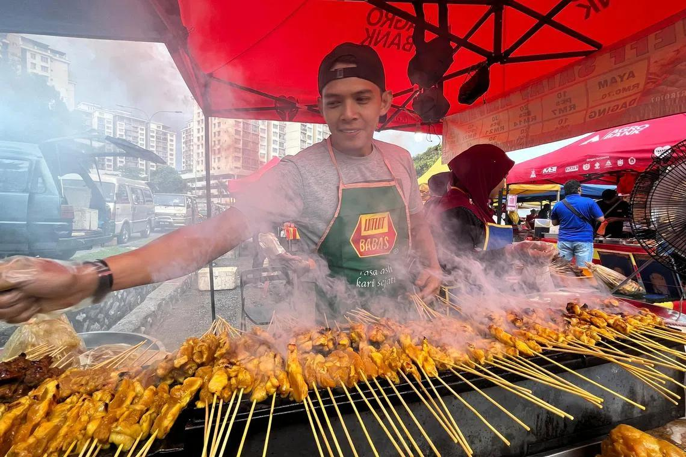
Street food is part of everyday life in Malaysia. Hawker centres, night markets (pasar malam) and roadside stalls serve cheap, freshly cooked food from early morning until late at night, and eating out is normal for many families.
Every community has added its own favourites: Malay stalls sell satay and nasi lemak, Chinese hawkers cook char kway teow and wantan mee, and Indian stalls serve roti canai and teh tarik. Famous food streets such as Jalan Alor in Kuala Lumpur and the hawker centres of Penang bring people of every background together at the same tables.